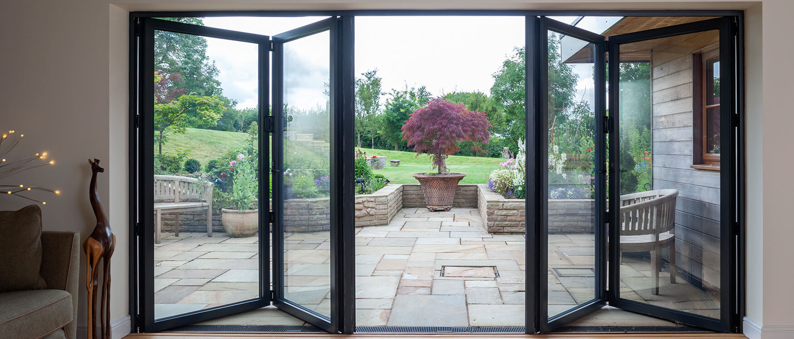

Windows & Doors
PVC windows and doors supplied and installed, together with repairs and replacement components for existing installations.
Border City Glass provides replacement glazing, failed double glazing replacement, PVC windows and doors, window and door repairs, emergency boarding and glass supply for homeowners and businesses throughout the region.

PVC windows and doors supplied and installed, together with repairs and replacement components for existing installations.
Replacement glass for broken units, damaged glazing and general glass replacement in domestic and commercial properties.
Replacement sealed units for misted, failed or blown double glazing.
Glass and mirrors supplied for a wide range of domestic and commercial applications.
Emergency boarding services to secure properties following accidental damage, vandalism or break-ins.
Shopfront reglazing, commercial aluminium doors and glazing services for businesses, contractors and property managers.
Based in Carlisle, Border City Glass provides glazing, window and door services throughout Carlisle, Cumbria, the South Lakes and South West Scotland.
For enquiries regarding replacement glazing, PVC windows and doors, emergency boarding, repairs or emergency call-outs, please contact us by telephone or email.
Tel: 01228 810404
Email: info@bordercityglass.co.uk